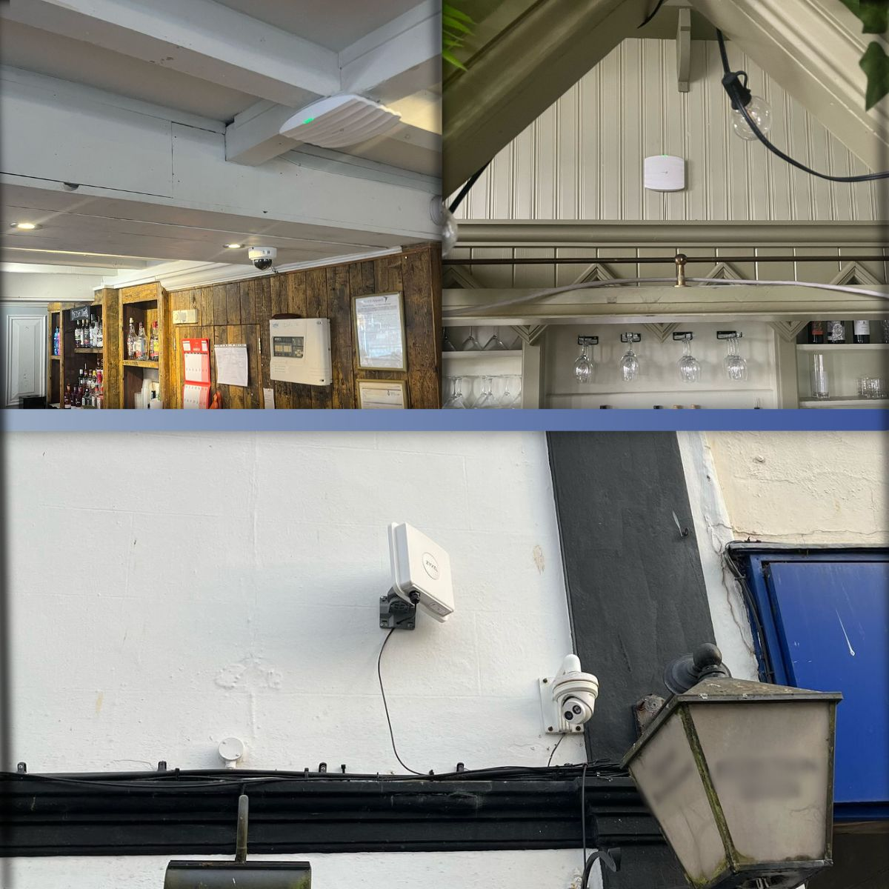
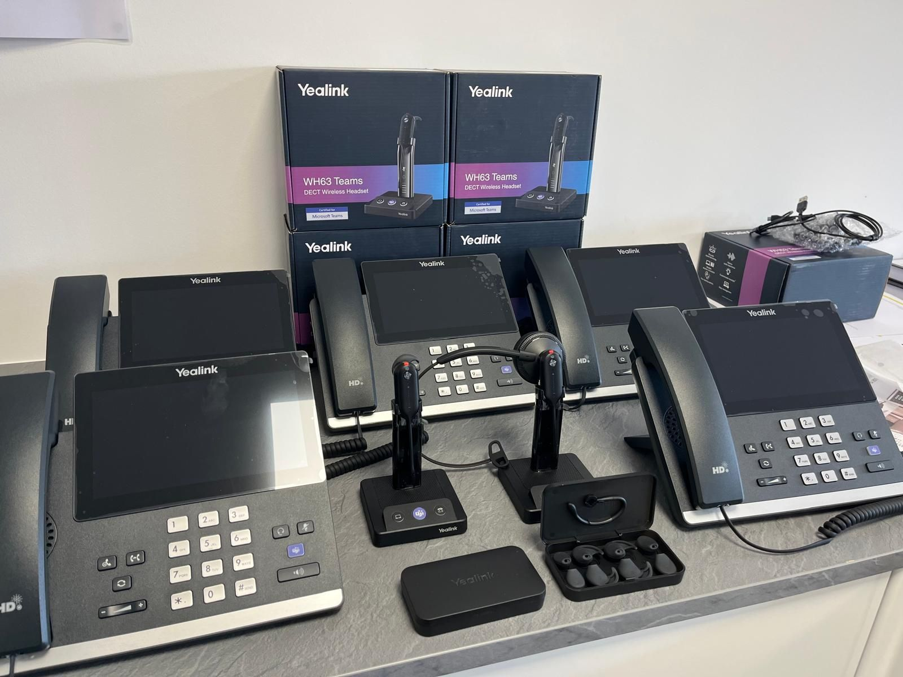
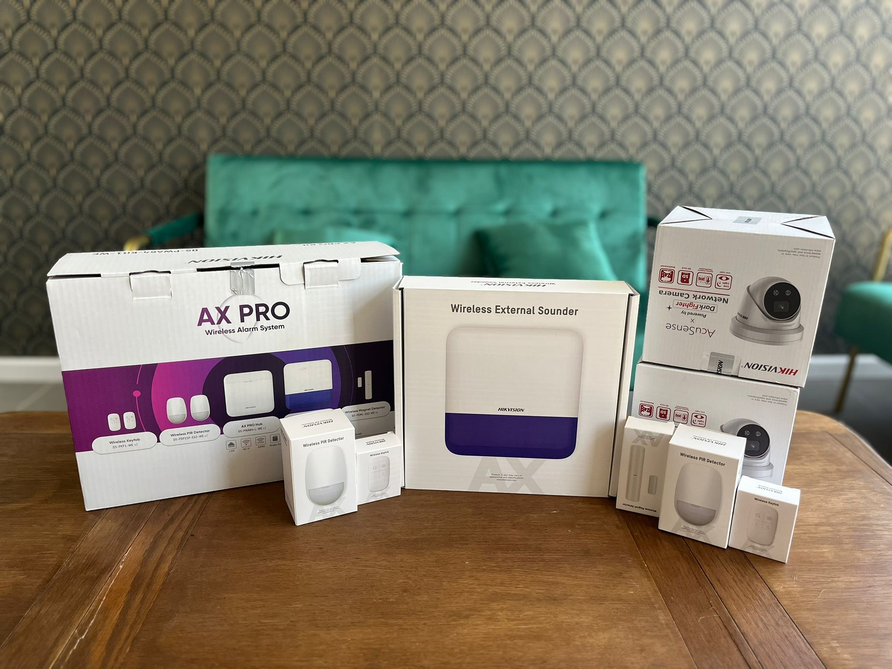
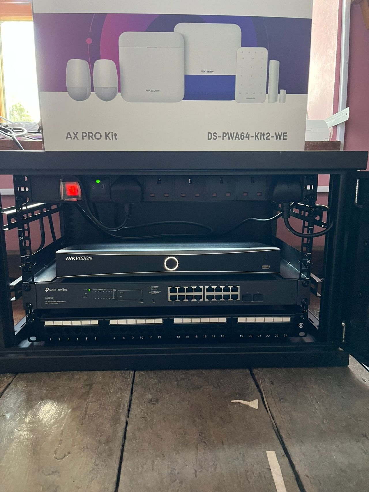
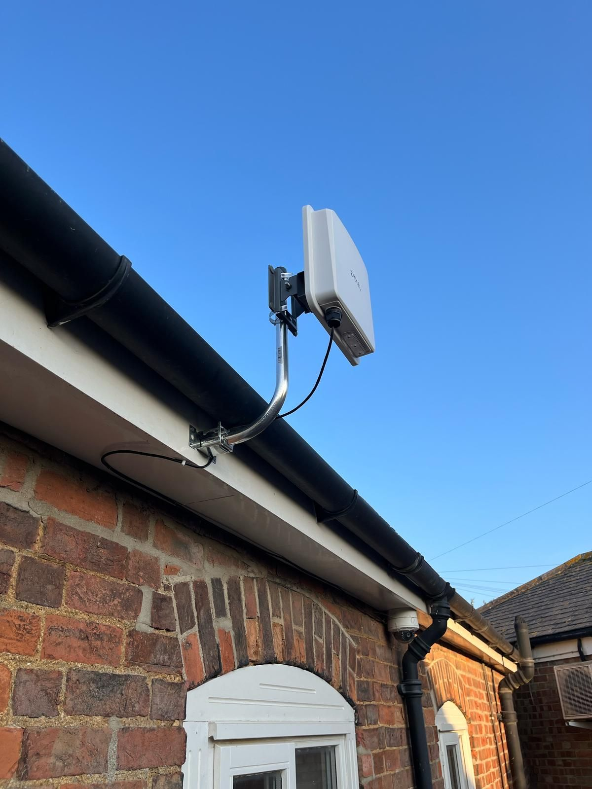

ICT Technician
Zachariasz Murawiec
Passionate IT student with solid IT knowledge and experience. Seeking an opportunity to use proven transferable skills into an exciting company to further develop my career. Love learning new skills and information every day. Not afraid to do the research/studying needed to increase my knowledge and abilities.
O mnie
Jestem zmotywowanym technikiem ICT z doświadczeniem w pracy terenowej oraz wsparciu technicznym. Lubię wyzwania i ciągły rozwój, zwłaszcza w obszarze nowych technologii i bezpieczeństwa IT.
Education and certificates
- Level 3 National Extended Diploma in Information Technology, Coventry College
- MTA: Windows Operating System Fundamentals (98-349)
- MTA: Security Fundamentals (98-367)
- ICT CyberSecurity Essentials
- Omada Certified Network Administrator (OCNA)
- IT Service Desk Customer Service Fundamentals
- Yealink Certified IP Phone Engineer and Headset Solution Specialist
Projects and Installations





Work Experience
- Oct 2023 – Jun 2024: V4Cloud – Information Field Technician
- July 2024 – Present: ICT Technician